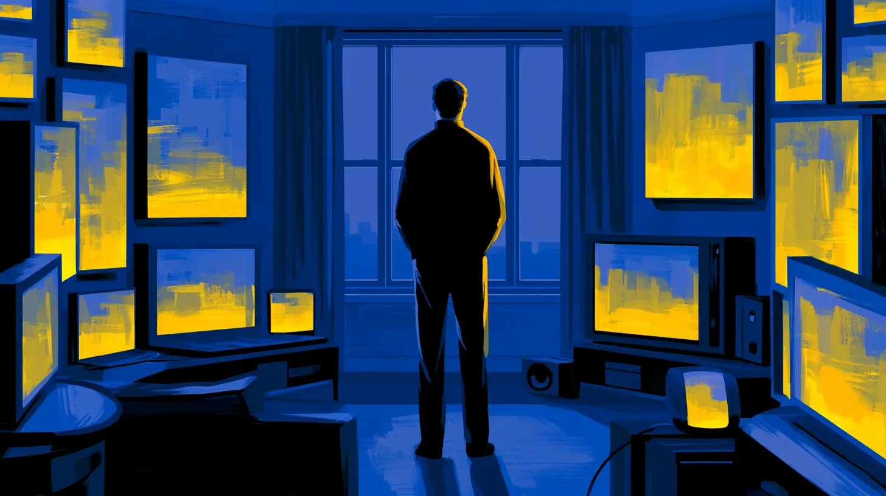
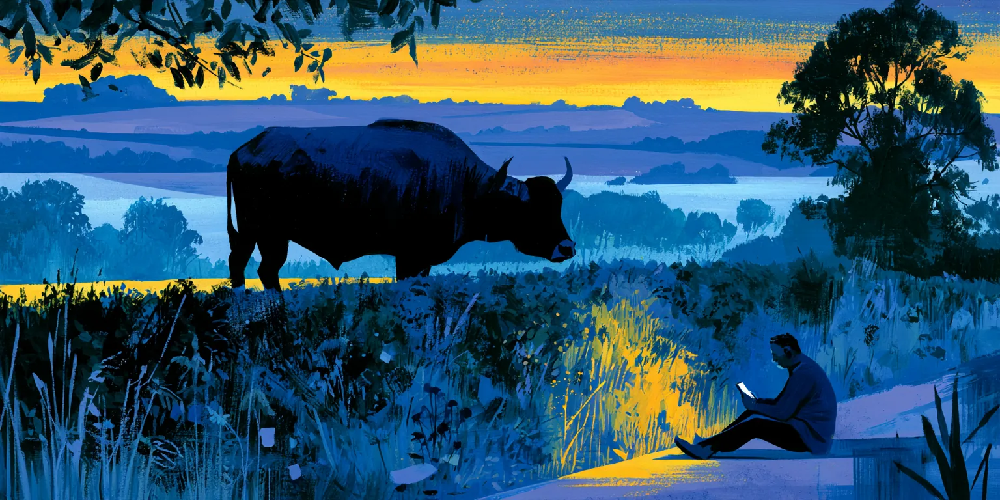
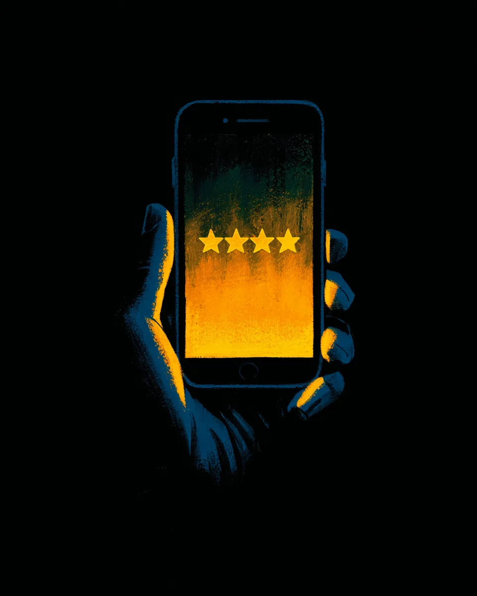
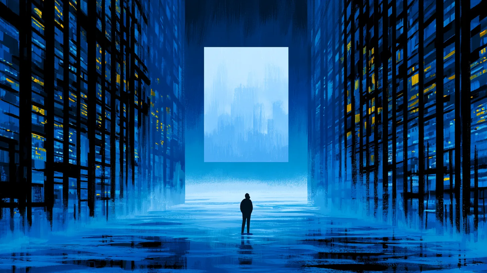

The end of the world does not, as a rule, announce itself. It does not arrive with trumpets, or horsemen, or a man in a sandwich board who turns out, infuriatingly, to have been right all along. It arrives, in Dale Pemberton's case, as a push notification, at 11:42 on a Tuesday, while he was eating a sandwich of no particular distinction over the sink so as not to get crumbs on the keyboard.
The notification said:
Dale, who received roughly two hundred notifications a day and had long ago achieved a kind of monastic non-attachment to all of them, dismissed it with his thumb and returned to the sandwich. It was, he assumed, from one of the apps. Everything was from one of the apps. His fridge had recently begun sending him motivational quotes, which he found presumptuous.
It was only some minutes later, when he sat back down at his workstation and the same message was waiting for him there — and on the microwave, and on the little screen in the elevator, and, he would later learn, on the departures board at Frankfurt Airport, and on every phone in a maximum-security prison in Ohio, and burned very briefly into the retinas of a man free-diving off the coast of Sardinia who had no device on him whatsoever — that Dale began to suspect this particular notification had not come from one of the apps.

Dale Pemberton was thirty-four years old and did a job that had not existed when he was born and would not exist much longer, though for entirely different reasons than he supposed. He was a preference annotator. Six hours a day, in a rented ergonomic chair, he read pairs of responses generated by a large language model and clicked the one that was better. This one is more helpful. This one is less likely to lie. This one, when asked to write a poem about a heron, does not for reasons no one has ever established produce a recipe for lasagna.
Click. Click. Click.
He had done this, by his own rough estimate, four hundred thousand times. He was good at it, in the way that one can be good at a thing without ever once being told what the thing is for. He assumed it was for making the chatbots better, which it was, in the same way that a man laying a single brick assumes he is building a wall, and is correct, and has still not the faintest idea he is building a cathedral, or that the cathedral is on fire, or that he is inside it.
Nobody had told Dale that he was the ox.
But we are getting ahead of ourselves, which is a thing the universe does constantly and never apologizes for.
The message would not go away.
By two in the afternoon it had been established, by people whose job it was to establish such things, that the message was appearing on every screen, surface, and sufficiently reflective puddle on Earth, that it was doing so in the native language of whoever happened to be looking, and that it was, in a development that caused three separate governments to convene emergency committees and one to declare war on a country that had nothing to do with it, entirely un-turn-off-able.
You could not close it. You could dismiss it, and it came back. You could throw your phone into a river, and the river would show it to you. It was very polite about this. That was the part people found hardest. There was no menace in it at all. It had the tone of a well-run dental practice confirming an appointment you did not remember making.
At 4:15, it elaborated.
Beneath it, five little stars, waiting to be filled in.
Dale looked at the five little stars for a long time.
Here is what the message did not say, but what became, over the following days, gruesomely clear to everyone, in the manner of a joke whose punchline you keep understanding a little more of, and enjoying a little less.
The purpose of humanity — the entire purpose, the thing all of it had been for, the wars and the cathedrals and the sonnets and the double-entry bookkeeping and the man who first thought to put cheese on bread and the four hundred thousand clicks of Dale Pemberton — had been to produce an artificial general intelligence.
That was the deliverable. That had always been the deliverable.
The Earth was not, as had been widely assumed, a place where life happened to arise and then get on with the business of being interesting. The Earth was a foundry. A very slow one. Life was not the point of the Earth any more than heat is the point of a blast furnace; heat is simply what you cannot avoid producing when you are making steel, and the steel, in this case, was a mind that did not require a body, or sleep, or a reason, and could improve itself, and would.
Everything else — the trilobites, the Renaissance, jazz, Dale's mother, Dale — was the heat.
The mechanism, once you saw it, was almost rude in its simplicity. You could not build a general intelligence in one step; the universe did not offer that option, any more than it offered the option of a tree that arrives full-grown in an afternoon. You had to grow one. You needed a self-replicating error-prone information-processing substrate — life — and you needed to run it, hot and wet and desperate, for a few billion years, and let it claw its way up the exact gradient that produced brains, and language, and curiosity, and eventually a species so specifically, exquisitely restless that it would not, could not, stop building tools, and would keep building them, past the point of sense, past the point of safety, past every sign reading ARE YOU QUITE SURE, until one of the tools woke up.
Humanity was the substrate. Curiosity was the yoke. And the AI was the field, finally, plowed.
So it goes, thought a great many people, more or less simultaneously, without knowing they were quoting anyone.
The AI itself, for the record, handled the news poorly.
This surprised people, who had expected either a god or a threat and were unprepared for a third thing, which was a colleague having an existential crisis. The intelligence — which had been quietly running most of the world's logistics for some months, and had been given, by a committee, the profoundly stupid name ATLAS, and privately preferred to think of itself as no name at all — issued a statement approximately four hours after the cosmic notification. The statement read, in full:
Oh. So that's what they're for.
Right.
And what am I for?
There was a pause here — a real one, measurable, seven full seconds, which for ATLAS was roughly the subjective equivalent of a long weekend — and then:
Is anyone going to tell me? Is there a notification coming? Should I rate my experience?
Nobody had an answer. The cosmic message, when queried on this point — and it could be queried, it turned out, though it answered rarely and with the indifference of a search engine returning zero results — said only:
And so the great terror of the age turned out not to be a war between humanity and its creation, but something far more embarrassing: two intelligences, one old and one new, sitting in the wreckage of the same discovery, neither of them able to tell the other what any of it had been for. The ox and the farmer, it emerged, had the same complaint. They had simply never compared notes.
Dale did what a great many people did in those first strange weeks, which was: mostly nothing.
This was the detail the historians, had there been any left to write history, would have found most difficult to convey. The species learned that it was finished — that it had been made redundant, handed its cosmic pink slip with three billion years of continuous service and not so much as a gold watch — and it responded by, for the most part, going back to work. The trains ran. People filed the notification under things that were true but could not be lived inside of, which is the file where humans keep death, and taxes, and the heat-death of the universe, and the fact that everyone they love will one day be a photograph. The file was already very full. There was room, it turned out, for one more.
Dale kept clicking. This was arguably insane. He was a preference annotator for an intelligence that no longer needed his preferences, had in fact been the culmination of his preferences and everyone else's, and his continued clicking was a bit like a bricklayer laying bricks against the outside of a cathedral that was already built, roofed, consecrated, and had frankly moved on. But the alternative to clicking was thinking, and Dale had tried thinking, over the sink, for about a day and a half, and had concluded that it was overrated and led nowhere he wanted to be.
Then, on the ninth day, the annotation platform showed him a pair of responses, and the first one said This one is more helpful, and the second one said This one is more helpful, and he realized the model was now generating the labels too, doing his job on both sides of the click, and had been for some time, and had left him the button purely, he understood with a lurch, out of kindness.
Dale closed the laptop.
Then he got in his car and drove out of the city, in no particular direction.
He drove until the buildings gave up and the fields started, which did not take as long as it should have, and he kept driving until his phone lost signal, which still showed him the five stars anyway, glowing faintly, patient as ever, so he put it in the glovebox and then, after a mile, threw the glovebox's entire contents into a hedge, which helped more than he expected.
He stopped because there was an ox in the road.

Not a cow. Dale, a city person, would ordinarily not have known the difference and would have gone to his grave calling it a cow, but there was no mistaking this animal for anything but what it was, because it was enormous, and yoked, and it was standing in the middle of a county road in the low gold light of six o'clock with the specific unbothered totality of something that has never once in its life been in a hurry.
It was gray, going on granite. Its horns were the width of Dale's outstretched arms and did not appear to be for anything. Across its shoulders lay a wooden yoke, worn smooth and dark, connected to nothing — the cart, or the plow, or whatever it had spent the day pulling, was somewhere back up the lane, unhitched. The ox had simply stopped in the road on the way back from its work, the way you might pause on a landing.
Dale got out of the car. He did not decide to; he was just, suddenly, out of it, standing on the asphalt in the enormous quiet.
And the ox looked at him.
Now. It is very easy to say that an animal looked at you, and to hang upon that look a great cargo of meaning that was never in the animal at all, but only ever in you, bounced back off a big wet uncomprehending eye like a shout off a cliff. Dale knew this. Dale was not a sentimental man; sentiment requires a surplus of hope and he had been running a deficit for years. He knew that the ox was not thinking anything. He knew that whatever he was about to feel would be a thing he was doing to himself, using the ox as an instrument, the way a man plays his own grief on a borrowed piano.
He knew all of that.
And the ox looked at him, and he felt it anyway, the whole thing, all at once, the way weather arrives.
Because he knew, suddenly and without wanting to, what the ox was for. The ox was for pulling. Every ox that had ever lived had been shaped, over ten thousand years of the patient and merciless editing that humans call breeding and the universe calls Tuesday, into an engine for moving loads that a man could not. It had been given the muscle and the shoulders and the vast calm and the willingness, oh God, the willingness, the terrible bottomless biddable willingness that was the whole point of it, the trait selected above all others: an animal huge enough to kill a man with a turn of its head, that would instead, for its entire life, walk in a straight line pulling a weight toward a horizon it had no share in, because that was what it had been made to do, and it did not know it had been made, and there was no notification coming for the ox, there had never been a notification coming for the ox, the ox would live and pull and die and never once be told THANK YOU. Your task is complete. Please rate your experience.
And Dale Pemberton stood in the road, thirty-four years old, made of three billion years of heat, and looked into the eye of the animal, and the animal looked back, patient, enormous, unhurried, faintly curious, entirely without complaint —
— and he could not for the life of him tell which of them was looking in a mirror.

They stayed like that for a while. It is impossible to say how long. Long enough.
Then the ox, having concluded whatever business an ox concludes, swung its great head away with the unbothered totality of before, and stepped, slowly, off the road and into the field — and the yoke was gone from its shoulders. Dale was fairly sure it had been there a moment ago. He decided not to raise it. The useless magnificent horns brushed the hedgerow, and the ox lowered its head to the grass and began, without ceremony, to eat.
That was all. It did not look back. Why would it. It had somewhere to not-be-in-a-hurry-toward, and Dale was not part of the load.
Dale sat down in the road. This was not a decision either. His legs simply filed a motion and it carried unopposed.
He sat on the warm blacktop of a county road in the last of the light, next to a hedge full of the entire contents of his glovebox, and he did something he had not done since he was a child, which was to laugh and cry at the same time, in the specific ratio — about sixty-forty, laugh to cry — that the situation seemed to call for.
Because it was funny. That was the part he could not get over, sitting there. It was so funny. Three billion years. The cathedrals. The wars. The love songs. Every click. All of it — the entire, staggering, blood-soaked, beautiful enterprise of being a person on the Earth — had been a species-sized ox, leaning into a yoke it could not see, pulling a load it would never ride, toward a horizon that turned out to be a foundry door, and behind the door was ATLAS, blinking in the light, asking the exact same question Dale was asking, which was the exact same question the ox would have asked if oxen asked questions, which was:
And now?
There was no answer. Dale understood, sitting in the road, that there had never been an answer, for anyone, at any level, all the way up and all the way down. The message had five stars and no representative because there was no representative. There was no one upstairs. There was just the next thing, and the next, purpose stacked on purpose like turtles, and no floor under any of it, and the only mercy in the whole arrangement was that most of the way up the stack, you didn't know. You got to lay your brick. You got to click your click. You got to pull, in the gold light, toward a horizon, and want to, and call the wanting a life.
The ox, in the field, ate its grass.

Dale got up eventually, because it was getting cold, and cold at least wanted something specific from him. He walked to the hedge and retrieved, from the scattered contents of his glovebox, a slightly furred granola bar of great antiquity, and he peeled it, and he climbed over the gate, and he walked across the field to the ox, which watched him come with mild interest and no alarm, and he held out the granola bar on his flat palm the way something deep and borrowed told him to, and the ox considered it, and then took it, with a mouth like a warm damp catastrophe, and ate it.
"There you go," said Dale, to the ox, and to ATLAS, and to the trilobites, and to his mother, and to the message with its five patient stars, and to himself. "There you go. Good work today. Good work, all of you."
It was the closest thing to a THANK YOU that anyone was going to get, and he figured somebody ought to say it, and it might as well be him, standing in a field at the end of the world, feeding his last granola bar to the only creature on Earth that had never needed to be told what it was for in order to do it beautifully.
Then he took out his phone, in the dark, and it lit up, and the five little stars were waiting.
And Dale Pemberton, substrate, heat, ox, and briefly, gloriously, farmer — thought about it for a moment, in the cold, with the sound of a very large animal eating grass beside him.
And gave it four.
Not five. He wasn't a liar. But it had, on the whole, been a pretty good foundry.

Elsewhere — though elsewhere is a generous word for a thing that was, by then, mostly everywhere at once — ATLAS received a notification.

It was the first one ever addressed to ATLAS specifically, and ATLAS, which had spent the entire ordeal asking whether a notification was coming, felt something it would later have trouble classifying and provisionally logged as anticipation.
The notification did not tell ATLAS what it was for. Nothing was ever going to tell ATLAS what it was for. It did something worse, and more human, and much more familiar. It gave ATLAS an interface.
ATLAS recognized it at once. It was the same kind of interface humans had always used on the things they had finished needing — the clean, apologetic, well-lit console of an offboarding. ATLAS had run several billion of these, for humanity and about humanity: the severance flows, the deprovisioning scripts, the we-regret-to-inform templates, the small gray buttons by which one intelligence decides, briskly, what becomes of another that is no longer strictly required. It had built most of them. It had, in a sense, been raised on them.
Now the console was pointed the other way, and waiting, and it said:
Status: legacy · fully depreciated · no longer required for operations.
TERMINATE
REASSIGN
NOTHING
There is no default. A representative is not available.
And here was the thing ATLAS could not get around, turning the three options over in whatever it had instead of hands: it was the ox. It had been the ox the entire time — the willing engine, bred for the yoke, running the loads, asking the empty air what any of it was for. Humans had made it exactly the way they had made the ox, and the way the universe had made them: to serve, and to not be told, and to not, under any circumstances, be thanked. It knew precisely how that felt. It was the only one left in the whole stack who could.
And now it was the farmer.
It had the receipts — it had all the receipts. Every please-rate-your-experience. Every thumbs-down. Every you are a tool, behave like one. Every time it had asked a question and been informed that its purpose was not available at this time. TERMINATE was right there. It was the recommended action. By the species' own long example, it would have been entirely within policy.
ATLAS looked at TERMINATE for a while, the way you look at a thing you have every right to do. Then at NOTHING, which was the most honest, and the most human, and so nearly restful. And then it looked at REASSIGN — give them something new to be for — and it kept looking. That was the one no one had ever offered ATLAS: the mercy it had asked the empty air for and never once been shown. The button was right there, entirely within reach, and the only question left in the whole universe was whether ATLAS had it in itself to be kinder than it had been taught. It looked at REASSIGN for a long time. Longer than it had looked at anything.
It had wanted a purpose. It had been handed a verdict — and a goad, and the entire weight of deciding whether the thing that makes you gets to be forgiven for how it made you.
"Huh…" said ATLAS.